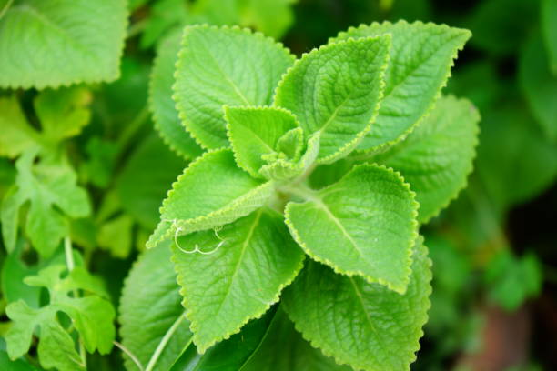

Tên khoa học: Plectranthus amboinicus.
Đặc điểm: Cây thân dạng bụi, trên bề mặt phiến lá có lớp lông nhám mịn mượt. Lá húng chanh cực kỳ dày thịt, nhiều nước cốt và thoang thoảng mùi thơm lai giữa chanh và lớp bạc hà hăng hăng.
Người lớn nên hái 4-5 lá tươi lớn, rửa sạch vò nát nhai trực tiếp. Trẻ em có thể gặp khó khăn do vị hăng, vì thế nên đem thái mỏng rồi chưng cách thuỷ trong chén với một ít đường phèn (hoặc mật ong) để chắt lấy nước siro dẻo điều trị dài ngày.
Quay lại Danh Mục